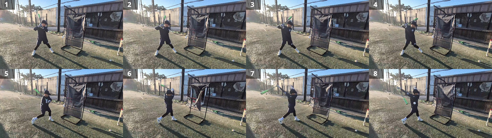
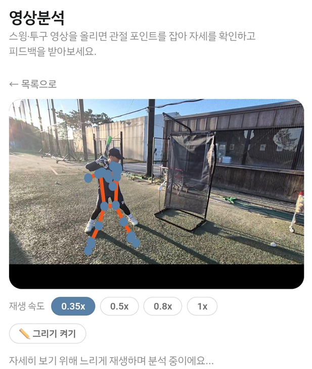
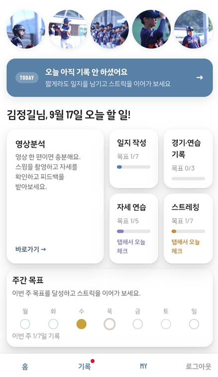

선수반 안내
화성서부리틀야구단 선수반은 감(感)이 아니라 시스템으로 아이들을 성장시킵니다.
모든 훈련은 기록되고, 분석되고, 눈으로 확인됩니다.
체계적인 훈련 시스템
기초가 탄탄해야, 무엇이든 쌓아올릴 수 있습니다.
어릴 때 잘못 익힌 자세는 나중에 고치기 어렵습니다. 몸에 밴 습관은 실력이 늘지 않는 원인이 되기도 하고, 부상으로 이어지기도 합니다. 그래서 화성서부리틀야구단은 처음부터 제대로 가르칩니다.
전 훈련 영상 기록
타격·투구 동작 하나하나를 영상으로 남깁니다.
스켈레톤 관절 분석
관절의 움직임을 추적해 자세를 정밀하게 확인합니다.
감이 아닌 데이터
"잘했다"가 아니라, 실제 몸의 움직임을 눈으로 보여줍니다.
실전 타격 훈련 현장
0.1초의 스윙, 8개의 프레임으로 분석합니다

주도적인 훈련
코치의 지도만큼 중요한 건, 아이 스스로 훈련을 이어가는 힘입니다. 화성서부리틀야구단은 선수 성장 기록 서비스 PLAYLOG를 통해, 아이들이 자기 훈련의 주인이 되도록 돕습니다.

직접 찍고, 직접 분석합니다
스윙이나 투구 영상을 촬영해 올리면, 관절 포인트를 자동으로 잡아 자세를 분석해줍니다. 재생 속도를 늦춰가며 몇 번이고 자신의 동작을 스스로 들여다볼 수 있어요.

매일의 훈련을 스스로 기록합니다
일지 작성, 자세 연습, 스트레칭, 경기·연습 기록까지 — 아이들이 직접 자신의 하루를 기록하고 스트릭을 이어갑니다. 꾸준함이 곧 실력이 됩니다.
PLAYLOG 바로가기 →
프로야구선수를 꿈꾸는 아이들에게,
화성서부리틀야구단은 가장 정직하고 과학적인 훈련 환경을 약속합니다.